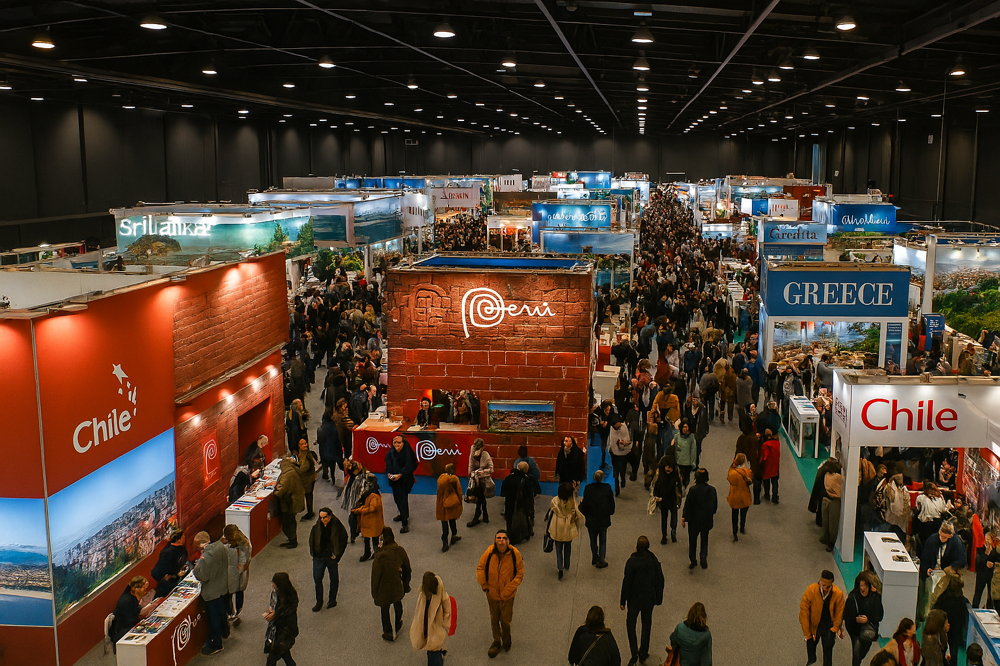

Bienvenidos a TravelExpo 2024
TravelExpo es la feria internacional de viajes más importante del año, donde profesionales del turismo, agencias de viajes y viajeros apasionados se reúnen para descubrir los destinos más fascinantes del mundo.
Durante tres días, tendrás la oportunidad de explorar ofertas exclusivas, conocer nuevos destinos, participar en conferencias especializadas y conectar con los mejores profesionales del sector turístico.
Información General del Evento
- Fechas: 15, 16 y 17 de marzo de 2024
- Horario: 9:00 - 19:00 horas
- Ubicación: Centro de Convenciones Internacional
- Entrada: Gratuita con registro previo
- Idiomas: Español, inglés, francés y alemán
¿Por qué visitar TravelExpo?
- Ofertas exclusivas: Descuentos especiales solo disponibles durante la feria
- Destinos únicos: Conoce lugares que no encontrarás en las guías tradicionales
- Expertos en turismo: Consulta directamente con profesionales especializados
- Conferencias gratuitas: Aprende sobre tendencias y consejos de viaje
- Networking: Conecta con otros viajeros y profesionales del sector
TravelExpo en Números
| Concepto | Cantidad | Descripción |
|---|---|---|
| Expositores | 250+ | Agencias de viajes, hoteles y destinos turísticos |
| Países representados | 85 | Destinos de todos los continentes |
| Visitantes esperados | 15,000 | Profesionales y público general |
| Conferencias | 30 | Charlas especializadas y talleres |
| Área de exposición | 12,000 m² | Espacio total del evento |
¡Regístrate Ahora!
El registro es completamente gratuito y te dará acceso a todas las actividades de la feria. Además, recibirás un mapa interactivo y una guía con todas las ofertas especiales.
Beneficios del registro:
- Acceso prioritario a conferencias
- Descuentos adicionales en stands seleccionados
- Kit de bienvenida con material informativo
- Invitación a eventos exclusivos
Enlaces de Interés
- Organización Mundial del Turismo (OMT)
- Asociación Internacional de Transporte Aéreo (IATA)
- Consejo Mundial de Viajes y Turismo (WTTC)
- Lonely Planet - Guías de Viaje
Galería de Imágenes